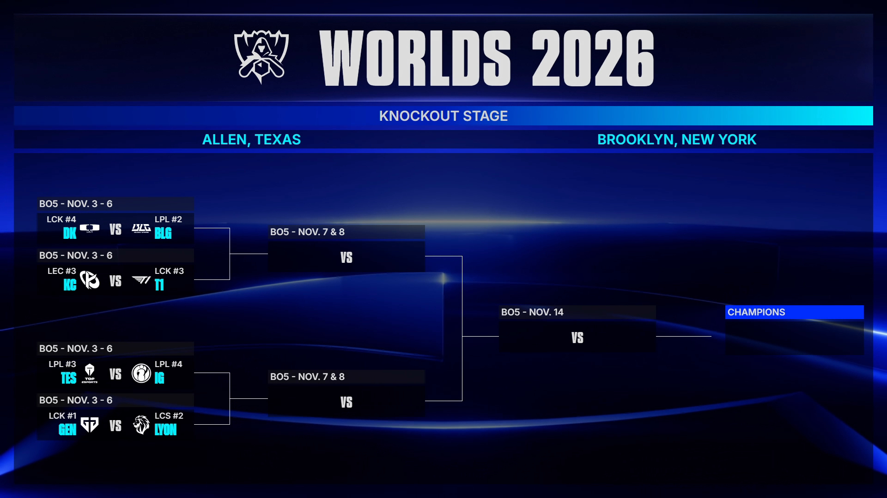
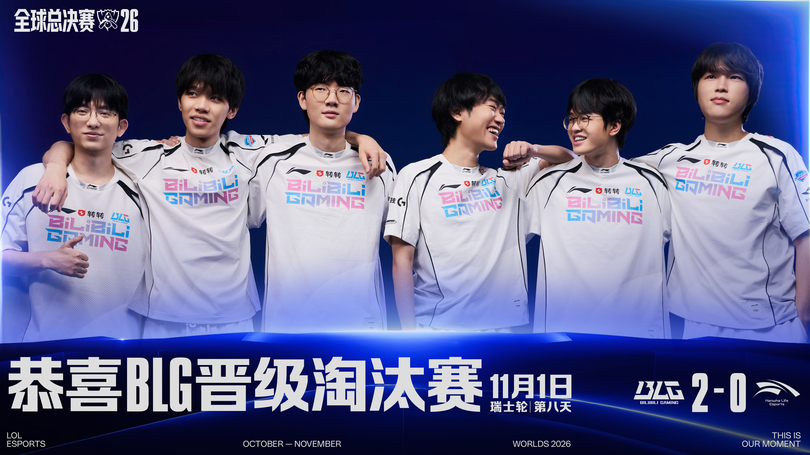

▲ 2026 全球总决赛四分之一决赛对阵图。图源：英雄联盟赛事 / LoL Esports
S16 全球总决赛 · 八强抽签
T1 这签，
说是保送没人反对吧
DK vs BLG · GEN vs LYON · KC vs T1 · TES vs IG
抽签结果出来了。四组对阵如下，BO5，11 月 4 日早上 6 点开打。
上半区
DK vs BLG
GEN vs LYON
下半区
KC vs T1
TES vs IG
抽签一出来，评论区炸了。不是因为哪场强强对话，而是因为 T1 的签——抽到了 KC。
1
T1 抽到 KC，评论区集体破防
KC 是 LEC 的队伍。T1 八强首轮避开了所有 LPL 和 LCK 的队伍，抽到了公认八强里纸面最弱的 KC。
再看下半区的另一半——TES vs IG，LPL 内战。也就是说，T1 不仅首轮打欧美，半决赛的对手还是 LPL 内战的胜者，进决赛之前不用碰任何一支 LCK 队伍。
上半区 GEN、DK、BLG 三家 LCK/LPL 豪强互砍，
下半区 T1 舒舒服服打欧美。
抽签结果一出，虎扑、微博直接刷屏："T1 这签不拿冠军都对不起主办方""明着保送""一路保送"。
"T1 这运气真有点变态吧，打到现在舒舒服服纯保送啊。"
—— 虎扑网友热评
话虽难听，但逻辑没错。T1 这条晋级线，确实是八强里最轻松的一条。
2
LPL 最不想看到的结果：TES vs IG 内战
比起 T1 的好签，LPL 粉丝更难受的是 TES vs IG。
iG 是 S8 冠军，TES 是 LPL 三号种子，两支队伍瑞士轮都打出了 3-1 的战绩。结果八强首轮就撞在一起，必有一支 LPL 队伍止步八强。
从赛区角度看，这是最亏的签——如果 TES 和 IG 分到不同半区，LPL 有机会同时占两个四强席位。现在只能保送一个。
手心手背都是肉。
这场内战，谁输都可惜。
3
DK vs BLG：Bin 的硬仗才刚开始

▲ BLG S16 全球总决赛官方定妆照。图源：英雄联盟赛事 / LoL Esports
刚 2-0 横扫 HLE 的 BLG，八强首轮撞上 DK。
DK 是瑞士轮 3-0 晋级的队伍之一，ShowMaker 状态回暖，打野 Lucid 的节奏是 DK 最锋利的刀。BLG 虽然刚赢了 HLE，但从 3-2 的抽签池出来，注定要打 3-0 的队伍。
Bin 刚把 Zeus 打成 0-2，现在又要面对 DK 的上路。这届世界赛，Bin 的上路对抗一场比一场硬。
好消息是，如果 BLG 赢下 DK，半决赛的对手是 GEN 和 LYON 的胜者——大概率是 GEN。下半区的 T1 那条线，BLG 决赛前碰不到。
4
GEN vs LYON：最没悬念的一组
GEN 是 LCK 一号种子，瑞士轮 3-0 全胜晋级。LYON 是 LCS 的队伍，从 2-2 组生死战打上来的。
纸面实力差距明显，GEN 晋级四强几乎没有悬念。LYON 能做的，就是尽量别被横扫。
5
四强路径：谁的路最顺
| 半区 | 八强对阵 | 晋级难度 |
|---|---|---|
| 上半区 | DK vs BLG | ★★★★★ 死亡之组 |
| 上半区 | GEN vs LYON | ★☆☆☆☆ GEN 保送 |
| 下半区 | KC vs T1 | ★☆☆☆☆ T1 保送 |
| 下半区 | TES vs IG | ★★★★☆ LPL 内战 |
上半区是死亡半区：DK、BLG、GEN 三强扎堆，LYON 大概率陪跑。三支夺冠热门里至少有一支倒在四强门外。
下半区对 T1 极其友好：KC + LPL 内战胜者，T1 只要正常发挥，进决赛的概率很大。
6
赛程
四分之一决赛全部为 BO5，北京时间 11 月 4 日早上 6 点 开打。
具体每天哪组对阵，官方后续会公布。但有一点可以确定：11 月 4 日到 7 日，每天早上 6 点一场 BO5，闹钟备好。
T1 的签是好签，
但冠军从来不是抽签抽出来的。
评论区聊聊：
T1 这个签，你觉得算不算保送？
TES vs IG，你更看好谁？
BLG 能不能过 DK 这关？
点个关注。每场八强战打完，我会第一时间整理比分和关键团战。
资料来源：英雄联盟赛事官方微博、直播吧、虎扑电竞、LoL Esports。具体比赛时间以官方后续公布为准。